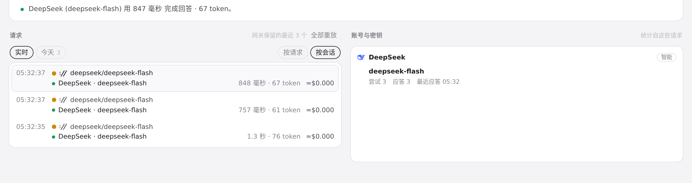
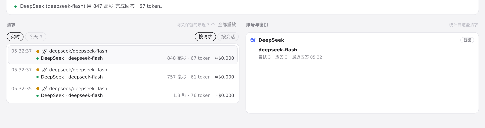

#396 界面预览
commit 92b4289 · 回到 PR · 路由页的请求列表新增「按请求 / 按会话」切换：按会话时按 agent + 会话 ID 折叠成一个会话标题（含请求数、token 数与费用合计，可点开收起），每行末尾也新增按有效价格估算的费用（未知价显示 —，部分合计带 +）。另外新增 /api/gateway/session-titles，用 Codex 本地会话索引补全会话名并在标题提示里保留 ID。
红线是鼠标走过的轨迹，红色圆环是一次点击；底部文字是这一步在做什么。空格暂停，← → 逐段查看。

路由请求列表的按会话/按请求切换与费用 · 路由页的请求列表，默认选中「按会话」；每行末尾是估算费用

路由请求列表的按会话/按请求切换与费用 · 「按请求」选中的列表
 路由请求列表的按会话/按请求切换与费用 · 「按会话」选中的列表
路由请求列表的按会话/按请求切换与费用 · 「按会话」选中的列表